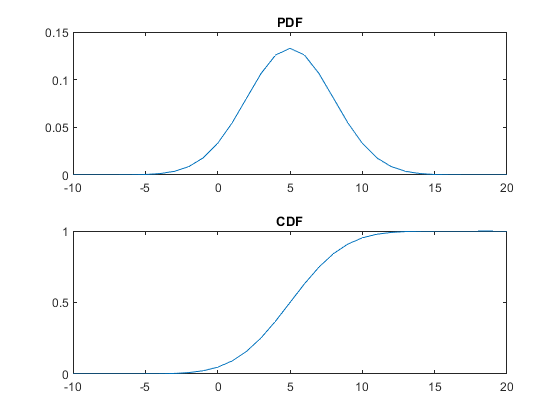

Contents
Plot PDF & CDF
x = -10:20; pdfgausp = normpdf(x,5,3); %normal pdf (x,mean, std) x = -10:20; pdfgausc = normcdf(x,5,3); %normal cdp (x,mean, std) figure; subplot(2,1,1) plot(x,pdfgausp); title('PDF'); subplot(2,1,2) plot(x,pdfgausc);hold on; title('CDF');
From CDF specify value for 50% 75% 90%
pd = makedist('Normal','mu',5,'sigma',3); x = -10:20; cdf_normal = normcdf(x,5,3,.5,.5); disp('CDF values [50%,75%,90%] = ') cdfper = icdf(pd,[0.5, 0.75, 0.9])
CDF values [50%,75%,90%] =
cdfper =
5.0000 7.0235 8.8447
3.6.1
%For a mechanically scanned antenna having an azimuth beamwidth of 2 degrees and an elevation % beamwidth of 3 degrees, how many beam positions are required to search a volume defined by % a 90 degree azimuth sector and a 6 degree elevation sector? ab = 2; %azimuth beamwidth of 2 degrees eb = 3; %elevation beamwidth of 3 degrees das = 90; %90 degree azimuth sector es = 6; %6 degree elevation sector disp('Number of Beam Positions = ') %How many beam positions are required NumofBeamPositions = ( das * (es) ) / ((ab)*(eb))
Number of Beam Positions =
NumofBeamPositions =
90
3.6.9
%Consider a weapon locating radar having a beamwidth of 2 degrees in both azimuth and % elevation that is set up to search a volume defined by a 75 degree sector in azimuth and a % 4 degree sector in elevation. If the radar also has a dwell time of 2.4 msec and a plan to spend % 5 dwells at each beam location, what is the total scan time? bw = 2; %beamwidth 2 degrees as = 75; %75 degree sector in azimuth es = 4; %4 degree sector in elevation dwt = 2.4; %dwell time 2.4msec dwel = 5; %5 dwells at each beam location % What is the total scan time? azi = (75)/(2); elv = 4/2; tst = (5*2.4)*(azi*elv);%total scan time disp('Total Scan Time = ') tst
Total Scan Time = tst = 900